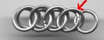
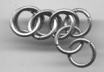
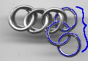
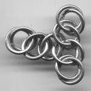

Half Persian 3:1 -- Making a 90 Degree Intersection
This article is due for revision -- as soon as I get my act together, we'll have nicer pictures, I promise!
This tutorial will demonstrate how to make a 90 degree intersection of two Half Persian 3:1 chains, which is just kind of an interesting thing that I noticed. I doubt that this will have very much significance but I thought it was cool.I'm assuming that you are familiar with the Half Persian 3:1 weave; in other words you know how to make it.
The links in the pictures are 16 ga 3/8" ID galvanized, but whatever works for Half Persian works for this tutorial. (Actually I take that back; you could do this in, like, 28 ga 1/32" ID links, but I reeeaaallllly don't recommend it.)
Step 1: Make a Half Persian 3:1 chain at least four units long. You can do it shorter, but it is somewhat liable to loose its form if you make it too short. Be sure to leave an extra link on the end.
Step 2: The link indicated by the arrow in the first picture now needs to flip over and down, as indicated by the second picture. Your chain should end up looking like the third picture.
 
Step 3: You should be able to see it by now: the blue links are arranged in the manner used to begin a chain of Half Persian 3:1, but perpendicular to the original chain.

Step 4: From there, all you have to do is lengthen the chain.

Have fun! And let me know if you ever find a use for this!